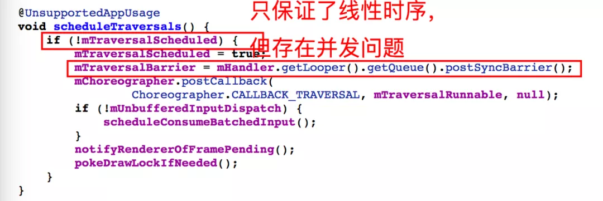

【转】今日头条 ANR 优化实践系列（4）- Barrier 导致主线程假死
简述：
前文，我们通过线上案例对影响 ANR 问题的六大场景进行剖析，这几类场景基本覆盖了线上大部分问题，详见 ANR 案例分析集锦。同时我们选取了较多 NativePollOnce 场景的案例，便于大家更好理解，ANR 时看到的 NativePollOnce 场景的问题，并不是导致 ANR 的根本问题。
下面要介绍的这类问题，Trace 现场依然是 NativePollOnce 信息，但与前几类问题不同的是，这类问题真的发生在 NativePollOnce 场景，接下来就看看到底是什么原因导致的。
主线程 Trace 堆栈：
分析思路：
针对该类问题，当看到这个信息时，第一判断依然是主线程历史消息耗时严重，或者系统负载过重导致的问题，因为工作日常分析了太多这类场景的 ANR 问题，而且最后的结论也证明都与此场景无关。但分析这个问题时，进一步拆解大盘指标发现一段时间内 ANR 增加的量级，基本全部落在这个场景，这不太符合我们的预期。但是鉴于 Trace 信息有限，只好把目光转移到系统侧，看看是否有线索。
分析系统&进程负载：
观察系统负载： 在 ANR Info 中查看 Load 关键字，发现系统在前 1 分钟，前 5 分钟，前 15 分钟各个时段负载并不高。
观察进程 CPU 分布： 进一步观察
"CPU usage from 0 ms to 24301 later"，看到 ANR 之后这 24S 多的时间，应用主进程 CPU 占使用率只有 15%，但是 com.meizu.mstore 应用 CPU 使用率达到 92%，user 与 kenel 比例分别为 71%，20%。与此同时 kswapd,mmc-cmdqd 等内核线程 CPU 使用率并不高，说明系统负载总体正常。如果根据我们前面 案例分析 得出的结论来看，这种场景难道是 com.meizu.mstore 进程严重抢占 CPU 导致的？带着这个疑惑，继续观察系统 CPU 分布。观察系统 CPU 分布：
进一步分析系统负载，发现整体 CPU 使用率稍微有些高。user 占比 37%，kernel 占比 24%，iowait 占比 6.9%，说明这段时间系统 IO 确实有些繁忙。
系统侧结论： 通过观察系统负载和各个进程的 CPU 使用情况，发现系统环境比较正常，但是 com.meizu.mstore 进程 CPU 占比偏高，而且 kernel 层 cpu 使用率(20%)较高，与系统 iowait (6.9%)占用较高可能存在一定关联，那么 IO 负载较高对当前应用有多大影响呢？我们回到应用侧进一步分析。
应用侧分析：
根据上面的分析，我们将方向再回到当前进程，通过对比各线程 cpu 耗时(utm+stm)，并没有看到某个线程存在明显异常。主线程 CPU 执行时长 utm:187，stm:57，基本正常。
在分析对比完线程 CPU 耗时之后，将目光再次聚焦到 Raster 监控工具 的调度时序图上面。
通过该时序图，观察以下三类信息特征：ANR 前的历史消息，正在执行的消息，被 Block 的消息：
历史消息： 主线程并不存在单次历史消息耗时严重的现象。
当正在执行的消息：正在执行的消息 Wall Duration 为 21744ms，CPU Duration 为 100ms。也就是说大量的时间发生在等待的场景，结合该场景，如果期间是因为执行 Idle Task 导致的耗时严重或长时间 Wait，那么 ANR 抓取的堆栈应该有 IdleTask 相关信息才对，因此首先排除了是 Idle Task 耗时严重导致的问题。
被 Block 消息：从上图可以看到， 第一个待调度的消息被 block 时长为 22343ms，其 block 时长基本等于当前正在执行消息的 Wall Duration 时长。也就说明了本场景大量消息 blcok 是受到了当前正在执行的消息影响。
分析到这里我们就有些困惑了，ANR 发生时当前正处于 NativePollOnce 场景，但是前面我们多次在案例分析中提到，进入 NativePollOnce 场景的条件是：消息队列没有立刻调度的消息时，会有条件的进入 wait 状态，等到超时或者新消息加入时会唤醒该线程并执行，但是从上图可以看到消息队列中存在大量待调度消息，而且很多消息都被 block 了 20 多 S，既然这么多消息可以被调度，那么系统为何还是一直在 NativePollOnce 环境中呢？难道真的是底层发生了问题，导致无法唤醒当前线程？
带着这个疑惑，我们陆续分析了同段时间内其他用户上报的问题，发现存在同样的现象：NativePollOnce 场景的 WallDuration 普遍较长，有的甚至超过了 100S，但是 Cpu 时长很短。如下图：

为此我们第一反应是系统出问题了？但是进一步对比来看，该类现象只在某个版本之后明显增加，而之前的版本并没有这类现象，如果是厂商更新 rom 导致的问题，应该影响全版本，甚至会影响所有应用，但事实并非如此，因此这与我们的推测并不符合，无法自圆其说。
按照我们的理解，如果直接进入 NativePollOnce 场景并且一直没有唤醒的话，那么 CPU Duration 应该会很少，并不应该是这样表现(CPU Duration 达到或超过 100ms)。
定向监控：
考虑到国内厂商对 Rom 定制化的习惯，为了确认上面监控的 Cpu 耗时是否是厂商在底层定制产生的耗时，我们在 Native 层通过 Hook 代理对 nativePollOnce 接口进行了监测。
在线上小范围验证和复现，通过观察这类 ANR 问题时的线程调度时序图，最终找到一个 NativePollOnce 停留时长高达 100S 的案例，如下图：
通过上图(TYPE=5)可以发现，ANR 发生前，主线程在消息调度结束与下次消息调度开始前，发生多次长时间停留的现象，而且期间都存在一定的 Cpu 耗时，但是远小于 Wall duration。与此同时查看本次进行 epoll_wait 期间，NativePollOnce 是否是一直没有返回，通过监控输出的日志，发现如下现象：
在对齐监控时序图与上图日志时间戳之后，看到 Java 层调用 looper.next()获取下一个消息过程中，Native 层 NativePollOnce 接口调用了多次，而且每次进入 epollwait 时传入的参数 timeout 为-1。分析到这里有些疑惑了，这并不是我们预期的一直 wait 场景啊，参数-1 代表什么意思呢？继续向下看。
MessageQueue 代码分析：
既然 ANR 这段时间，执行多次 NativePollOnce，就说明其它线程已经多次将主线程多次从 epoll wait 状态唤醒，但是消息队列已经有大量待调度的消息，为何主线程还依然停留在 looper.next()内部呢？分析到这里只好再次回到上层代码继续分析，这个参数-1 是哪里设置的。
从上图可以看到，每当消息执行结束后，获取下个消息之前会先主动调用一次 NativePollOnce，但是 nextPollTimeoutMillis 默认为 0，并不是底层接口代理时看到的-1，那么这个-1 是哪里传入的呢？继续向下看。
通过上图可以看到，只有一个地点将 nextPollTimeoutMillis 设置为-1，但是通过注释可以清晰的看到提示”msg=mMessage”，没有消息？这与现实严重不符啊，ANR 发生时，消息队列明显有很多消息待执行，这里却提示”msg=mMessage”。
通过进一步观察上述逻辑发现，该提示发生在 else 分支，如果进入到该分支，那么则说明 msg 对象获取为空，但是在上面明明看到赋值过程”msg=mMessage”，而且当前这种场景 mMessage 肯定不为 null，毕竟在 ANR 时获取的待调度消息也是通过 mMessage 遍历得到的。
既然 mMessage 不是 null，那么就说明”msg=mMessage”肯定不是 null，但是到了下面却为 null，说明在此过程肯定被某个逻辑给重新赋值了，继续分析。
通过上图可以看到只有这个场景可能将 msg 重新赋值，那么这部分逻辑是做什么的呢？
Barrier 机制介绍：
看到上面的注释瞬间明白了，原来是 Barrier 机制，是 Android 系统用来保障部分系统消息高优调度的一种机制，实现原理很简单：会在每次消息返回前，检测该消息是否是 barrier 消息，barrier 消息的典型特征就是 msg.target 对象为 null，如下图：
如果是 Barrier 消息，那么将对消息队列中的消息进行遍历，找到第一个异步消息，然后将其赋值给 msg。但是如果遍历了所有的消息都没有找到异步消息，那么最后一个消息 msg.next 肯定为 null，此时 msg 会被置为 null，并退出循环。
上图为异步消息的设置和判断是否是异步消息的接口实现，我们日常创建的 Message 是不会设置该属性的。只有系统在某些特殊场景，如 UI 刷新，为了保障交互体验，会在请求 vsync 信号前，先发送一个 barrier 消息，然后等到 barrier 消息执行时，遍历 vsync 消息并将其强制调整到头部，以保证该类消息的响应能力：barrier 消息设置和移除，实现逻辑如下：
通过上面实现可以看到，barrier 消息是不会主动移除的，需要设置 barrier 消息的业务消息得到响应后主动移除该消息，否则 barrier 消息会一直存在！
分析到这里就可以很好的解释为何在 MessageQueue.next()接口内部多次调用 NativePollOnce 了，一定是当前的 mMessage 是个 barrier 消息，但是与其关联的业务消息一直没有出现，或者执行之后没有同步移除该消息，导致该 barrier 消息一直处于消息队列头部，每次获取下一个消息时，都被 barrier 拦截和并遍历异步消息，如果有异步消息则响应，没有异步消息则通过 nativePollOnce 进行等待，从而阻塞了正常消息的调度和响应！
进一步梳理 MessageQueue.next 接口执行逻辑，通过下图就可以清晰的看到我们在 Native 层 Hook 时看到 nextPollTimeMills 传参-1 的场景是怎么设置的。
那么结合本类 ANR 问题，消息队列第一个待调度的消息是不是 barrier 消息呢？我们再次找到上面分析的案例，通过监控时序图观察第一个被 block 的消息。
通过上图可以清晰的看到，当前消息 target 对象为 null，正是 barrier 消息！破案了！
连锁反应：
按照上面的分析，如果 barrier 消息没有及时移除，那么每次通过 MessageQueue.next()查询时，只能过滤并返回带有异步属性的消息，如用户点击消息 input，vsync 消息等等。 即使用户交互和 UI 刷新消息可以正常执行，但是大量业务消息无法执行，这就导致了 UI 展示可能存在异常或功能异常，并且应用 service，receiver 等消息并没有异步属性，因此也会被 block，最终造成响应超时发生 ANR！
结合当前问题，我们发现该用户在第一次 ANR 不久之后再次发生 ANR，主线程 Trace：
第二次 ANR 时，对应的调度时序图如下：
通过当前用户连续 2 次 ANR 的消息调度监控时序图可以看到，本次 ANR 时，之前的历史消息记录没有发生任何变化，也就是说第一个 ANR 发生后确实没有再调度其他消息，但 2 次 ANR 的 WallTime 间隔超过 40S，也就是说这 40S 时间里，主线程确实一直 Block 在当前场景！
在消息调度时序图上进一步对比分析，发现两次 ANRCase，主线程当前正在执行消息的 Cpu Time 时长却发生了变化，即从 100ms 增加 450ms。那么这个数据是否置信吗？
结合这两次 ANR，分别分析一下 ANR Trace 主线程 utm+stm 的耗时(见上图 2 次 Trace 堆栈)：
发生第一次 ANR 时线程状态及 utm,stm 耗时：
state=S schedstat=( 2442286229 338070603 5221 ) utm=187 stm=57 core=5 HZ=100发生第二次 ANR 时线程状态及 utm,stm 耗时：
| state=S schedstat=( 2796231342 442294098 6270 ) utm=202 stm=77 core=5 HZ=100用第二次发生 ANR 时的 utm+stm 减去第一次 ANR 时的 utm+stm，即 202+77-(187+57)=35ms。这个值对应的是 cpu 时间片，utm,stm 单位换算成时间单位为 1 比 10ms，即 35*10=350ms。这个值恰好等于 Raset 监控工具统计到的两次 Cputime 差值：450ms-100ms=350ms。
说明在此期间消息队列增加了多个消息，因为每次增加一个消息，主线程都会从 epollwait 场景唤醒，然后回到 java 环境对消息队列进行遍历，判断是否有异步消息，如果没有找到，则再次进入 epollwait 状态，如此反复，从而导致了上述现象！
问题初定位：
通过上面的层层分析，我们知道了是 barrier 同步机制出现了问题，导致消息调度发生异常，即：在 barrier 消息没有被移除之前，主线程只能处理 asyncronous 属性的消息，这类消息通常是用来刷新的 vsync 消息，以及响应用户交互的 input 消息，但是正常的业务消息及其他系统消息则无法正常调度，如 Serivce，Receiver 具体超时行为的消息，因此导致了 ANR。
定位及修复：
在定位到原因之后，接下来就是找到问题并解决问题，具体什么样的改动会引起这里问题了，通过分析我们知道既然是 Barrier 消息同步的问题，那么我们可以在设置 barrier 和移除 barrier 的过程加入监控，判断哪里设置了 barrier 消息，但是没有同步移除。通过 Java hook 代理了 MessageQueue 的 postSyncBarrier 和 removeSyncBarrier 接口，进行 Barrier 消息同步监测，遗憾的是线下并没有复现。
因此只能再次回到代码层面，对相关改动进行分析，最终在一笔需求提交中发现了线索。
逻辑调整前： 先移除将要强制调度的并设置了异步属性的消息，再强制调度该消息，以保证该消息不受 barrier 消息之前的消息 block，进而提高响应能力。
if (hasMsg) {
......
handler.removeCallbacks(message.getCallback()); //先移除
handler.dispatchMessage(cloneMsg); //再强制调度该消息
......
}逻辑调整后： 先强制调度该消息，然后再将该消息从队列中移除。
......
handler.dispatchMessage(newMessage); //先强制调度
handler.removeCallbacks(message.getCallback()); //从队列中移除消息
......
}但是时序调整后存在一定隐患，即在强制调用 DoFrame 消息期间，业务可能会再次触发 UI 刷新逻辑，产生 barrier 消息并发出 vsync 请求，如果系统及时响应 vsync，并产生 DoFrame 消息，那么调用 removeCallbacks 接口会一次性清除消息队列中所有的 DoFrame 消息，即：移除了消息队列之前的 DoFrame 消息和下次待调度的 DoFrame 消息，但是与下次 DoFrame 消息同步的 barrier 消息并没有被移除。
那么为什么会移除多个消息呢？这就要从handler.removeCallbacks 的实现说起了。
进一步查看 messageQueue.removeMessages 接口实现，发现该接口会遍历消息队列中符合当前 runnable 以及 object 的消息，但是上面传递的 Object 对象是 null，因此就相当于移除了当前 Handler 对象下面所有相同 runnable 对象的消息！
因为强制刷新和时序调整的问题，导致了消息队列中同时存在 2 个 UI doFrame 消息，并在强制执行之后被同时移除，从而导致一个无人认领的 barrier 消息一直停留在消息队列！
其它场景：此外，除了上面遇到的场景会导致这类问题之外，还有一种场景也可能会导致这类问题，即:UI 异步刷新，尽管 Android 系统禁止异步刷新，并利用 checkThread 机制对 UI 刷新进行线程检查，但是百密一疏，如果开启硬件加速，在 Android O 及之后的版本会间接调用 onDescendantInvalidated 触发 UI 刷新，该逻辑躲过了系统 checkThread 检查，将会造成线程并发隐患。如下图，如果并发执行则会导致前一个线程的 mTraversalBarrier 被覆盖，从而导致 vsync 消息与 barrier 出现同步问题。

查看 Android Q 源码，看到 onDescendantInvalidated 内部加上了 checkThread，但被注释掉了！解释如下：修复摄像头后重新启用或者通过 targetSdk 检查？好吧，或许是忘记这个 TODO 了。
总结：
至此，我们完成了该类问题的分析和最终定位，综合来看该类问题因 Trace 场景(NativePollOnce)和问题本身的高度隐蔽性，给排查和定位带来了极大挑战，如果单纯依靠系统提供的日志，是很难发现 MessageQueue.next()内部发生了异常。这里我们通过 Raster 监控工具，还原了问题现场，并提供了重要线索。现在总结来看，该类问题其实具有很明显的特征，表现在以下几个方面：
- 问题场景 ANR Trace 集中聚合在 NativePollOnce，此过程 Wall duration 持续很长，并且屏蔽了后续所有正常消息调度，看起来像主线被冻结一样。
- 通过 Raster 监控工具可以清晰的看到，消息队列中如果第一个待消息 target 为 null，即为 barrier 消息，可以通过后续消息 block 时长评估影响程度。
- 出现该类问题时，因为正常消息无法被调度，如 Service，Receiver 消息，将会导致应用连续发生 ANR，直到用户主动 Kill 该进程。
后续：
接下来的文章中，我们将会介绍系统服务与客户端 binder 通信过程中，因为时序颠倒引起的 ANR 问题，因为是系统机制出现了 bug，理论上所有应用都会受到影响，问题表现同样很隐蔽，那么这类问题到底是什么样的表现呢？敬请期待。